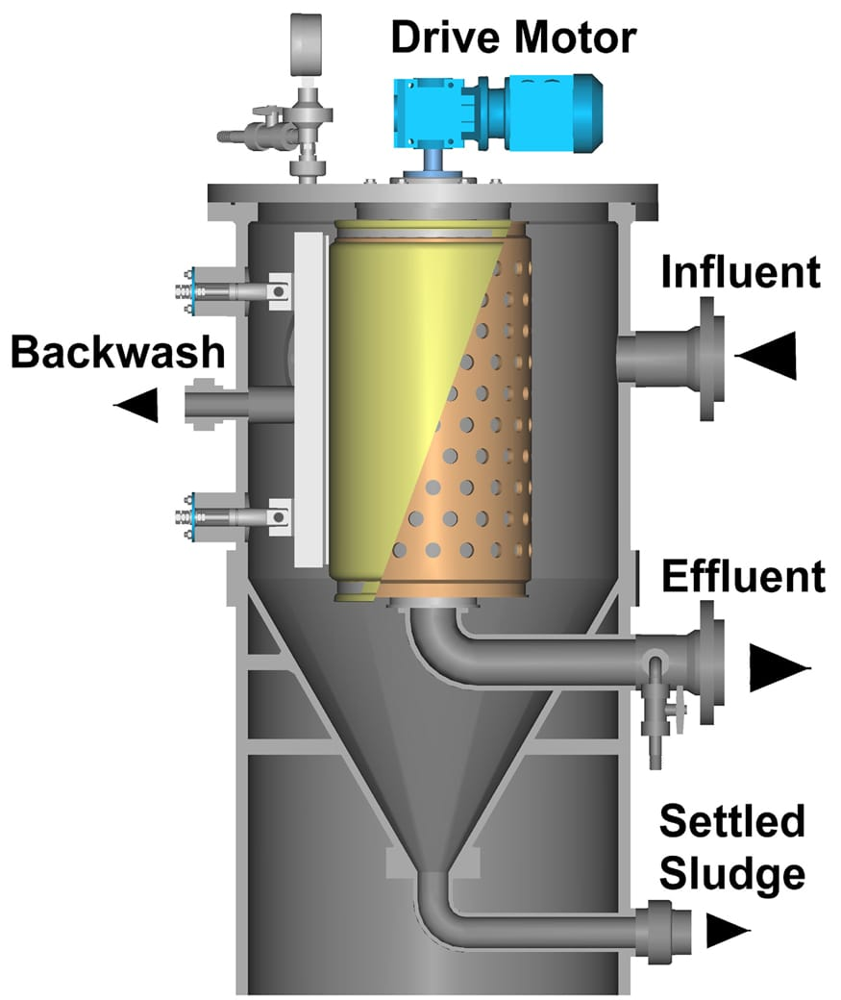

Cloth media drum filter installed in a self-contained steel tank — the most independent solution in the Cloth Media line. No concrete channel required, making it the ideal choice for retrofits, capacity expansions, and sites where civil construction is limited.

The AquaDrum® is the cloth media filter version designed for installation in its own steel tank, eliminating the need for concrete channels. This makes it the most flexible and quick-to-install solution in the Cloth Media line — simply connect inlet and outlet pipes, and the system is operational.
Ideal for retrofits at WWTPs that lack existing filtration channels, or for capacity expansions without extensive civil works. The rotating cloth media drum guarantees the same effluent quality as other filters in the line, with TSS consistently below 10 mg/L and continuous automatic backwash.
Self-contained steel tank — no civil works, no concrete channel, fast and simple installation.
Perfect for adding tertiary filtration to existing WWTPs without interrupting operations.
Additional modules can be installed quickly to increase capacity as needed.
Effluent enters the steel tank through the inlet nozzle and flows to the exterior of the rotating drum covered with high-efficiency cloth media. By hydraulic gradient, the liquid passes outside-in through the media, and clarified effluent is collected inside the drum and discharged through the outlet nozzle.
As solids accumulate on the outer surface of the media, the tank level gradually rises. When the level differential reaches the set point, the backwash shoes are automatically activated, traversing the drum surface with pressurized water jets that remove solids to the sludge collector. The entire process is controlled by a local PLC.
Effluent enters the steel tank and surrounds the rotating cloth media drum.
Effluent passes outside-in through the drum; solids retained on the outer surface.
Shoes traverse the drum when needed, removing solids without stopping the system.
Adding tertiary filtration to existing WWTPs without building new concrete channels
Additional modules installed quickly to expand filtration capacity
Tertiary treatment at industrial sites with civil construction constraints
Rapid installation to meet environmental licensing deadlines or urgent expansions
High-quality tertiary effluent production for reuse at any scale
Installation at sites where extensive civil works are unfeasible or prohibitively costly
AquaDrum® is the answer. Our technical team evaluates your project and sizes the ideal system.